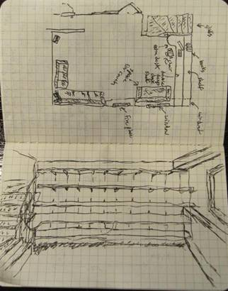

The Super Desk
Started
9/19/2010
The
original desk and shelf I was using left a lot to be desired. The desk
and
electronic components blocked access to the downstairs window and the
shelve were
not making good use of the wall space and I had also never gotten
around to finishing the wood. Now with the newly refinished wood floor throughout
the
house including the staircase it was time to fix up the shelve space.
After
much looking around at other peoples ideas at local open houses, online
at
places like lifehacker.com and thecoolhunter.net and on the TV with
programs
like This Old House and Hometime. After much thought I came up with a
solution.
I would combine the shelve and desk space and electronic into the same
area and
solve three problems at once.
I
also have several large printers that I wanted to get out of the way so
I
needed to make measurements and take notes.

The
original design drawing and layout.

List
to take to the home store.
</p>
Removed
the existing shelf support brackets with one row of slots and replaced
it with
heavy duty ones with two rows of slots.
I
needed to join three pieces of red oak boards in order to get the 26
inch width
I needed for the desktop and upper shelf. I could reuse the original
unfinished
12 foot boards I was using with the original shelves but I needed to by
some
more to extend the desktop and upper shelves. You can see my stereo
projectors
on the ceiling.
I
used a dowel centering jig I bought from Harbor Freight to join the
boards
together with 3/8 inch dowels.
I
need to glue and clamp the larger board in place as it was too big (14
feet) to
be moving between the basement workshop or the garage. I also had to do
things
in stages so I could keep the computer up and running as well as the
Tivo's for
watching TV during the duration of the project.
I
used the shelves for work space while I worked on the lower and upper
shelves.
Again
I had to do the finishing in place for the desk as it was too big to
move
anywhere. I added some table legs on either side for the little end
pieces that
stick out. I purchased some new desk chairs from overstock.com and they
came in
handy to do the although they did get a little dusty in the process.
These seem
to be the best chairs for the bargain based on various reviews I found
online.
Once
the desktop was finished I could move the computer over. I will
repurpose the
old desk for my wife to use at the local school where she works.
I
also moved my son's computer over to the desk so he can use the other
side.
Originally
I was going to put the electronic components in the corner but I
decided it
would look and work better in the middle. I bought two Tripp Lite 4
foot power
strips to run up the middle so I wouldn't have to worry about not have
enough
power plugs for all the wall wart plugs. I also bought a longer 6 foot
power
strip to put under the desk. The cable for the projectors would also
not need
to run as far.
So
I decided to cut the big upper shelve in half to accommodate this
change.
Now
it's time for staining and finishing, it took two days to complete. It
was hard
to control drips on all the boards at once and keep everything moving
but it's
good enough. I put the problem areas in the back so they wouldn't show.
Finishing consisted of staining with Cabot dark walnut, followed by
Varathane
one step stain and polyurethane in red mahogany and early american.

I
needed some more boards to complete the shelves underneath the desk. I
will get
to finishing them later. I picked up a couple of rounded leather desk
blotters
for the corners on each side. They are made of metal so you do not need
to
support them underneath and it adds some desktop space right where you
need it
for the computer keyboards. I would have had to cut much larger pieces
of wood
to make curves like that for the desktop instead I could just extend
the
desktop with easy to cut rectangular pieces.
I
used some under cabinet lighting I had from Ikea and some cable
management
strips to clean up the wiring. I also used some photo hanging wires
behind the
lights to be used to hang photos and poster prints. They can be slide
back and
forth to get access to the shelves behind and hide some of the mess
that might
be present on the shelves.
I
still have a big cable management job for the electronic components
ahead of me
but I have plenty of cable ties and cable wraps.
I
installed some Ikea under cabinet LED lighting so I can see what I am
doing
under the desk. I also installed some cable trays under the
desk to keep
the cables off the floor. Originally I was going to put the big printer
on the
upper large shelve but it was just to big to feel safe so I put in on a
larger
shelf underneath the desk instead.
After
several hours of cable management the electronic components are useable
on the
shelves.
Here
are things pretty much complete. I still need to finish some of the
shelves under
the desk and the table legs need to be attached as well but I will wait
until I
get a chance to re-carpet the floor downstairs before attaching them.
back